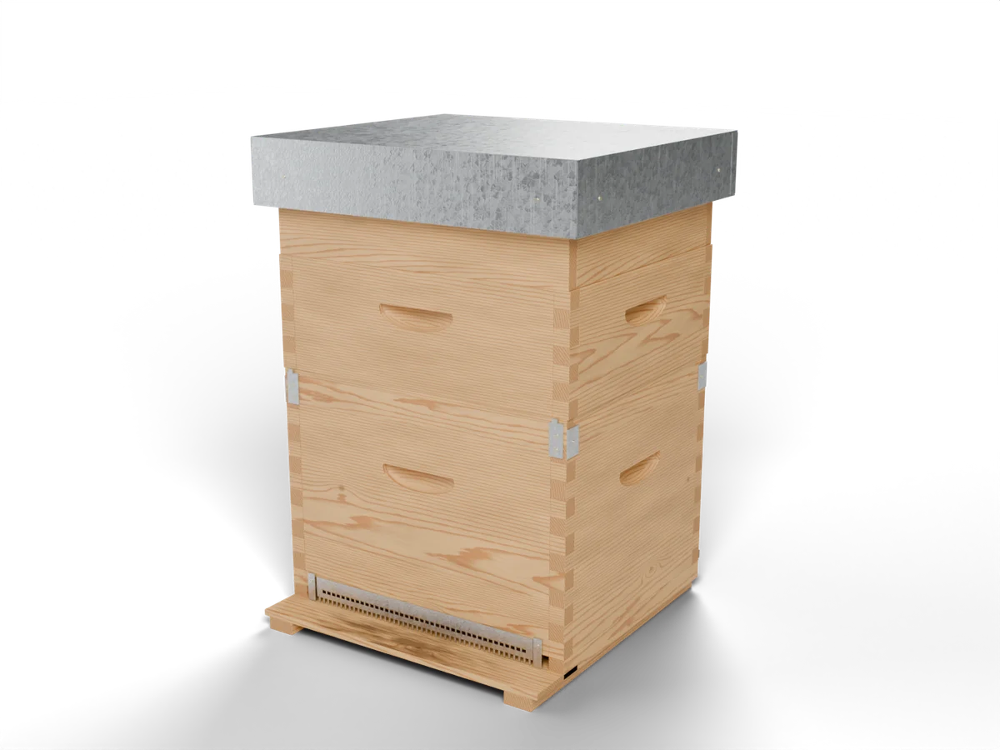

Tetto
Una cassa di legno rivestita di lamiera zincata. Sporge di due centimetri e mezzo per lato, così la pioggia cade lontano dalle pareti. Sotto la lamiera il legno fa da isolante, contro il caldo d'estate e il freddo d'inverno.
Dadant-Blatt · dieci telaini
Le nostre api vivono in arnie Dadant-Blatt da dieci telaini. Qui trovi perché le abbiamo scelte, com'è fatta una dentro e come cambia da una stagione all'altra.
La scelta dell'arnia
Di arnie ce ne sono tante. Questa l'abbiamo scelta per quattro ragioni pratiche, che riguardano il miele e le api più di noi.
Il melario è basso e separato dal nido. Lo mettiamo quando una fioritura comincia e lo togliamo quando finisce: così sulla, acacia e millefiori restano tre mieli distinti invece di mescolarsi in uno.
Dieci telaini da nido lasciano spazio a una regina ligustica, che depone molto, e alle scorte di miele che a 650 metri servono per arrivare a primavera.
Il fondo antivarroa ha un cassettino che si sfila dal retro. Contiamo gli acari caduti senza disturbare la famiglia e decidiamo se trattare in base a quel numero.
È l'arnia più usata in Italia. Telaini, melari e attrezzi sono compatibili con quelli di qualunque apicoltore o fornitore: se un pezzo si rompe, lo troviamo.
Da vicino
Un'arnia Dadant-Blatt ricostruita in 3D alle misure reali. Girala, avvicinati e smontala un pezzo alla volta, fino al favo con la covata.

Il tuo browser non riesce a mostrare il modello 3D.
Scegli un pezzo, o toccalo nell'arnia, per smontarla e vedere a cosa serve.
Una cassa di legno rivestita di lamiera zincata. Sporge di due centimetri e mezzo per lato, così la pioggia cade lontano dalle pareti. Sotto la lamiera il legno fa da isolante, contro il caldo d'estate e il freddo d'inverno.
Chiude l'arnia sotto il tetto e lascia alle api lo spazio giusto sopra i telaini. Il foro al centro serve per il nutritore: in autunno, se le scorte sono scarse, da lì diamo sciroppo o candito.
Il piano del miele. È alto 175 millimetri e ha nove telaini, più distanziati di quelli del nido, così le api allungano le celle e le riempiono di miele. Lo mettiamo in primavera, quando la famiglia è forte, e lo togliamo per smielare.
Quando il miele è maturo, con meno del 18% circa di acqua, le api chiudono ogni cella con un tappo di cera, l'opercolo. Per smielare lo togliamo con una forchetta apposita e il miele esce in centrifuga.
Una griglia di lamiera tra il nido e il melario, con fessure di poco più di 4 millimetri. Le operaie ci passano, la regina no, perché è più grossa. Così nel melario non depone le uova e i favi restano pieni solo di miele.
Qui vivono la regina e la covata. I dieci telaini del nido non si toccano per il miele: le scorte che restano qui servono alla famiglia per passare l'inverno.
Al centro la covata opercolata: le future api, chiuse nelle celle. Intorno le larve e, più fuori, le uova appena deposte. Poi una corona di polline di tanti colori e in alto un arco di miele. In primavera la regina depone fino a circa duemila uova al giorno.
L'entrata dell'arnia. I denti lasciano passare le api ma non i topi, che d'inverno cercano un posto caldo. Stringerla aiuta una famiglia debole a difendersi dalle api che vengono a rubare il miele.
Il pavimento è una rete d'acciaio. La varroa, un acaro che vive sulle api, a volte si stacca: cade tra le maglie e non riesce più a risalire. La rete fa anche entrare aria, utile d'estate.
Si sfila dal retro senza aprire l'arnia. Dopo qualche giorno contiamo le varroe cadute e capiamo quanto è infestata la famiglia, e se è il momento di trattare.

Ricostruita da noi in 3D sulle misure di un'arnia vera. Il favo di covata e quello da melario sono fatti cella per cella.
Un anno nell'arnia
L'arnia cambia forma durante l'anno: si alza in primavera, si abbassa in autunno. Ogni stagione riprende un pezzo che hai appena smontato.
Resta il nido con le scorte che abbiamo lasciato alle api. Si stringono in glomere attorno alla regina e noi non apriamo: se qualcosa non va, ce lo dice il sensore. Quando non c'è covata trattiamo la varroa con acido ossalico.
La regina riprende a deporre e la famiglia cresce in fretta. Quando il nido è pieno mettiamo l'escludiregina e sopra il primo melario: da lì in su ci sarà solo miele.
A ogni fioritura il suo melario. Quando i favi sono opercolati e il peso dell'arnia supera la riserva che serve alla famiglia, lo togliamo e smieliamo a freddo.
Tolti i melari, l'arnia torna al solo nido. Controlliamo le scorte e, con il cassettino, quante varroe cadono. Se il miele non basta per l'inverno, sul coprifavo va il nutritore.
Arnia Priscilla · sensore 3Bee
Nell'arnia Priscilla un sensore misura ogni giorno peso, temperatura e umidità. È da quei numeri che decidiamo quando togliere un melario. Lo storico di un anno intero è pubblicato.